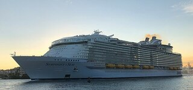
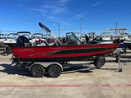
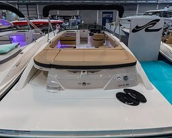

Ласкаво просимо до нашого розділу оглядів суден і човнів! Тут ви
знайдете детальну інформацію про різноманітні види суден - від
розкішних круїзних лайнерів до компактних рибальських човнів та
швидкісних катерів. Ми прагнемо надати вам всебічний огляд, включаючи
технічні характеристики, історію створення та цікаві факти про кожне
судно. Сподіваємося, що ці огляди допоможуть вам краще зрозуміти світ
суднобудування і знайти ідеальне судно для ваших потреб.
Круїзний лайнер "MS Symphony of the Seas"

"MS Symphony of the Seas" - це найбільший круїзний лайнер у світі,
що належить компанії Royal Caribbean International. Судно має
довжину 362 метри і вміщує до 6680 пасажирів. На борту є
різноманітні розваги, включаючи аквапарк, льодовий каток, театри,
ресторани та багато іншого. "Symphony of the Seas" пропонує
унікальний досвід круїзу з високим рівнем комфорту і обслуговування.
Цей лайнер був спущений на воду у 2018 році і з того часу вважається
перлиною флоту Royal Caribbean. Пасажири можуть насолоджуватися
безліччю басейнів, гідромасажних ванн, спортивних майданчиків та
численних ресторанів, що пропонують страви з усього світу. Завдяки
своїм розмірам і широкому спектру послуг, "Symphony of the Seas"
став улюбленим вибором для сімейних подорожей та романтичних
круїзів.
Рибацький човен "Lund 1875 Impact XS"

"Lund 1875 Impact XS" - це популярний рибацький човен, відомий своєю
міцністю та універсальністю. Човен має довжину 18 футів (приблизно
5,5 метра) і обладнаний сучасними рибальськими технологіями,
включаючи ехолоти, тролінговий мотор і зручні рибальські сидіння.
"Lund 1875 Impact XS" підходить для риболовлі як на озерах, так і на
річках, забезпечуючи стабільність і комфорт під час ловлі риби.
Однією з ключових особливостей "Lund 1875 Impact XS" є його
стабільність на воді, що досягається завдяки спеціальній конструкції
корпусу. Це забезпечує безпечне та комфортне перебування на воді
навіть у несприятливих умовах. Крім того, човен оснащений потужним
двигуном, який дозволяє швидко досягати потрібних місць для
риболовлі. Цей човен також відомий своєю багатофункціональністю. Він
підходить не лише для риболовлі, але й для сімейних прогулянок на
воді. Просторий інтер'єр і зручні сидіння дозволяють комфортно
розмістити кілька пасажирів, що робить "Lund 1875 Impact XS"
відмінним вибором для будь-яких водних пригод. На додаток до всіх
своїх переваг, "Lund 1875 Impact XS" має привабливий дизайн і
високоякісні матеріали, що забезпечують його довговічність та
надійність. Човен легко транспортувати, що дозволяє брати його з
собою на різні водні об'єкти. Завдяки всім цим характеристикам,
"Lund 1875 Impact XS" є одним з найпопулярніших виборів серед
рибалок та ентузіастів водних розваг.
Катер "Sea Ray SPX 210"

"Sea Ray SPX 210" - це стильний і потужний катер, ідеальний для
водних розваг. Катер має довжину 21 фут (приблизно 6,4 метра) і
обладнаний потужним двигуном, який дозволяє розвивати високу
швидкість на воді. "Sea Ray SPX 210" оснащений зручними сидіннями,
сучасною навігаційною системою та аудіосистемою. Це чудовий вибір
для сімейних прогулянок і активного відпочинку на воді. Дизайн
катера також враховує комфорт пасажирів. Зручні сидіння з м'якою
оббивкою, підстаканники, та вбудовані динаміки роблять кожну поїздку
на "Sea Ray SPX 210" максимально комфортною. Крім того, катер має
великий багажний відсік, що дозволяє зручно зберігати все необхідне
обладнання і речі.